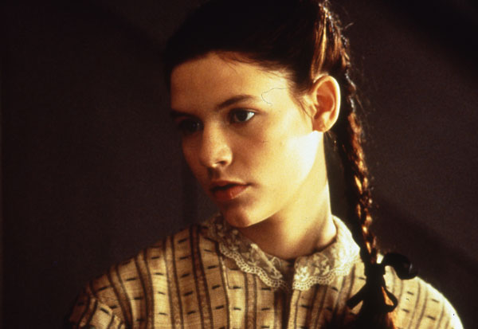

|
In the closing scene of Gillian Armstrong's 1994 film Little Women, we watch the
final moments of the courtship of Friedrich Bhaer (Gabriel Byrne) and Jo March (Winona
Ryder). Bhaer delivers the proofs of Jo's novel to her Concord, Massachusetts, home and
declares to her, "Reading your novel was like opening a window onto your heart." This
intertextual moment pays tribute to the enduring love many readers feel for Louisa May
Alcott's 1868-1869 novel about the four March sisters, raised by enlightened but poor

Kirsten Dunst in Little Women
|
parents in Civil War New England. In both novel and film, the daughters "conquer
themselves beautifully": Writer Jo controls her temper and abandons her misguided passion
for sensationalist fiction; beautiful Meg (Trini Alvarado) turns away from her vanity;
precocious Amy (Kirsten Dunst and Samantha Mathis) quells her pretentious desires for
ladyhood; angelic Beth (Claire Danes) is, simply, conquered, the film's melodramatic
sacrifice. In this contemporary rendering, the Little Women tame their ambitions
but do not smother them; they become wives, but they are strong, and their husbands are
good.
Bhaer's comment to Jo also articulates the visual device the film uses to bring viewers
into what Carroll Smith-Rosenberg calls the "female world of love and ritual" of
mid-nineteenth-century New England. (It was shot in Vancouver, British Columbia, and
Deerfield, Massachusetts, as well as Concord.) As viewers we peer into the windows of the
glowing home of the March women, bathed in warm, golden light; we watch from the outside
and sometimes withdraw decorously lest we voyeurs see too much of the emotional intensity
of life inside. Never have we seen a visual enactment of sentimentality, domesticity, and
the bonds between women as loving, ritualistic, and powerful.
The film is a commercially and thematically successful adaptation of Alcott's tale
because it connects two genres, the sentimental novel and the Hollywood woman's film.
By emphasizing Jo's writing of a novel in the style proper to her gender and class and in a
genre that focused on women and their world view, the film acknowledges its historical
roots. At the same time, it awakens feminist nostalgia for such novels through its message
that sisterhood should be cherished. Jo tells us early on, "I could never love anyone as I
love my sisters." Later the newlywed Amy says, "The relation of sisters is more important
than marriage." Furthermore, the film makes a generational plea: Feminist mothers, who
love the story, can enjoy it with their rebellious daughters, who have refused to read the
novel. Where Alcott's novel transforms the middle-class home into a force for redeeming
the world, the film does the contemporary work of making the feminist home a hospitable
place for women.
As a result, though the novel insists on the dreariness and toil of everyday life in
the impoverished but tenaciously middle-class March home, the film is nostalgic for the
home as a woman-centered world. The telltale signs of poverty and labor--tattered ribbons,
Beth's assortment of broken-down dolls, a broom--are transformed into treasured objects that
the camera lingers over in the mise-en-scene. Much of the movie is shot in the attic,
|

Claire Danes in Little Women
|
kitchen, and garden, all sites laden with nostalgia in the American sensibility. The film
pays loving attention to the details of domesticity: quilts, bouquets of wildflowers, the
kneading and baking of bread. The very drudgery the girls complain about is made visually
beautiful, the housework, as Jeanne Boydston argues, rendered pastoral. Objects in the
film are old and a little crumpled, including the authentic dresses and even the paper on
which Jo writes. Unlike Alcott's novel, the film's emphasis on domesticity can function
only as nostalgia, both for viewers having read Little Women and, more dangerously,
for the seemingly simple, womanly times in the mid-nineteenth century home when there was
more meaning, more feeling--more of everything we seem to have forgotten or lost.
Though the movie is nostalgic about domesticity, it understands how sentiment works,
particularly concerning Danes's performance as Beth. I wept along with Beth at the gift of
a piano, and her deathbed speech in Jo's arms is heroic yet achingly soft: "I was never
like the rest of you, making plans for the great things I would do. I love being home. But
I don't like being left behind. I can be brave, but I know I shall be homesick for you,
even in heaven." The film also takes sentiment into social and political domains. While
the movie, like the novel, pushes aside the slavery question, it cites ethnic and racial
strife to explain the Marches' morality and class position. For example, the Marches do
not buy silk, not because they cannot afford it, but because the Chinese use child labor
in manufacturing it. The Marches are poor, we are told, because Mr. March's school had to
close when patrons protested the admission of a "dark" child.
Though most reviewers have focused on Ryder's brash portrayal of Jo, for historians
another key performance is Susan Sarandon's Marmee. Marmee's role as the matriarch is
given an unlikely feminist edge, as she criticizes corsets and tells lonely Jo to go out
and "embrace your liberty." The film's transformation of Marmee into a feminist tells us
everything about its con temporary appeal as a woman's film, by making women's culture
into a form of feminist politics. Jo also takes an uncharacteristic stand on suffrage,
perkily stating, "Women should vote not because they're better but because they are
citizens and human beings." With these lines ringing in our ears, the film's emphasis on
women's agency in gender relations undermines traditional Hollywood codes.
Ryder's Jo is powerful because she is an active, almost frenetic, subject as well as an
adored object of the camera, especially in scenes with Laurie (Christian Bale), the rich
boy next door. Laurie's tutor and Meg's husband-to-be, John Brooke (Eric Stoltz),

Winona Ryder in Little Women
|
observes to Marmee, "One hopes that your girls would be gentling influences." Such gender
homilies are revealed as jokes when the film shows the girls romping around in a snowball
fight and using Laurie to pull their sled. These images are reinforced in the dialogue
among the sisters and Marmee. When Amy asks whether Laurie improperly touched Meg's
sprained ankle at a party, Jo dismisses her, saying, "Don't be so swooney," and Marmee
chimes in, "I won't have my girls being silly about boys." Indeed, in its depictions of
the sisters' performances of Jo's theatricals and meetings of the Pickwick Club, the film,
like the novel, luxuriates in the girls being silly as boys.
The film's vibrancy and its cunning adaptation of Alcott's novel make it useful for
courses in American cultural history and women's history as an example of how the past is
imagined. The film demurs from a more conventional lesson about middle-class women's
separatism and moral purity to affirm that romantic love and sisterhood are compatible.
While that is surely a contemporary feminist assumption, Little Women is more
interesting as an example of how realism, sentimentality, and nostalgia work together.
Bhaer tells Jo, "You should be writing from life, from the depths of your soul"; the value
of the novel that Joe eventually writes and that the film celebrates is this conflation of
realism and sentiment. We are asked to recognize Jo's faith that sisters are made in the
home, by feeling not only a nostalgia for a lost sisterhood but also the sentimental
feminist desire to create it anew.
Source: Elizabeth Francis in The Journal of American History 82:3 (December 1995), 1312-1313.
|